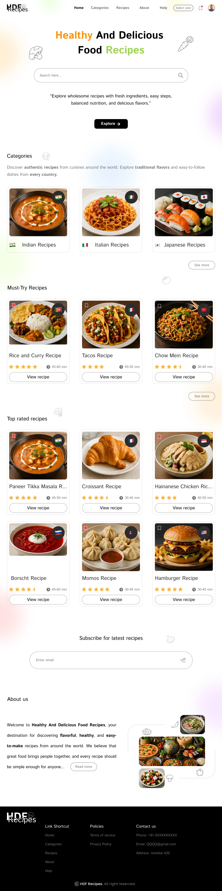

Healthy & Delicious Recipes Website
Alfa Omega Shipping & Consultancy Website A modern shipping and logistics website designed to showcase transportation services, simplify shipment tracking, share industry insights through blogs, and provide businesses with a seamless enquiry experience through a clean and professional interface.

Project Overview
This project is a modern recipe website designed to help users discover, explore, and prepare recipes from different cuisines around the world through a clean and enjoyable cooking experience. The primary goal was to make recipes easy to browse, simple to understand, and enjoyable to follow by combining detailed cooking instructions, ingredient lists, ratings, and premium content into a user-friendly interface. Rather than overwhelming users with unnecessary information, every page is designed to support a smooth journey—from discovering a recipe to successfully cooking it.
Project Information
UI/UX Design
Recipe Website
Figma
Responsive Website
Design Challenge
Many recipe websites contain cluttered layouts, intrusive advertisements, and inconsistent recipe formatting, making it difficult for users to focus on cooking. The challenge was to design a website that: Makes recipe discovery effortless. Organizes cooking instructions clearly. Supports users with detailed ingredients and preparation steps. Encourages community interaction through ratings and reviews. Offers premium content through a simple subscription experience. Maintains a clean and distraction-free interface.
User Experience Design Goals
Recipe Discovery
Discover recipes easily.
Global Cuisines
Explore global cuisines.
Comfortable Reading
Read recipes comfortably.
Step-by-Step Cooking
Follow cooking instructions step by step.
Reviews & Ratings
Share reviews and ratings.
Easy Subscription
Manage subscriptions effortlessly.
Premium Access
Access premium content seamlessly.
Focused Browsing
Enjoy a distraction-free browsing experience.
Design Process
Research & Requirement Understanding
Identified user needs, cooking habits, and business requirements to create an enjoyable and intuitive recipe browsing experience.
Information Architecture
Organized recipes, cuisines, categories, premium content, and navigation to help users discover recipes with ease.
UI Design
Designed a clean and modern interface with appetizing visuals, clear typography, and intuitive layouts for comfortable reading.
Interactive Prototype
Built interactive user flows to validate recipe browsing, cooking instructions, subscriptions, reviews, and overall navigation.
User-Friendly Cooking Experience
Refined the complete user journey to help visitors discover recipes, follow cooking instructions, and enjoy a seamless cooking experience from start to finish.